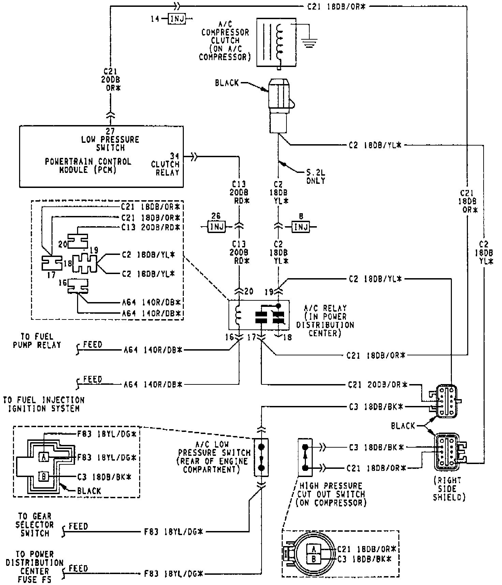

Using Charging Station J-23500-01
Fig. 17 A/C Compressor Clutch Control Circuit. R-134a System:

System Empty
1. Connect manifold gauge set.
2. Measure refrigerant and heat to 125 °F with charging station. Refer to manufacturer's instructions provided with equipment being used.
3. Open low (suction) and high (discharge) side valves. Open charge valve to allow heated refrigerant to flow into system. When transfer of refrigerant has stopped, close low and high side valves.
4. If all the charge did not transfer from the dispensing device, run engine at a high idle (1500 RPM). Set A/C control to A/C, low blower speed, and open windows. If A/C compressor does not engage, test compressor clutch control circuit and correct any failure.
5. Open low side valve to allow remaining refrigerant to transfer to the system.
CAUTION: Do not open high side valve at this time.
6. Close all valves and test A/C system performance.
A/C Performance Testing
7. Disconnect charging station or manifold gauge set. Install service port caps.